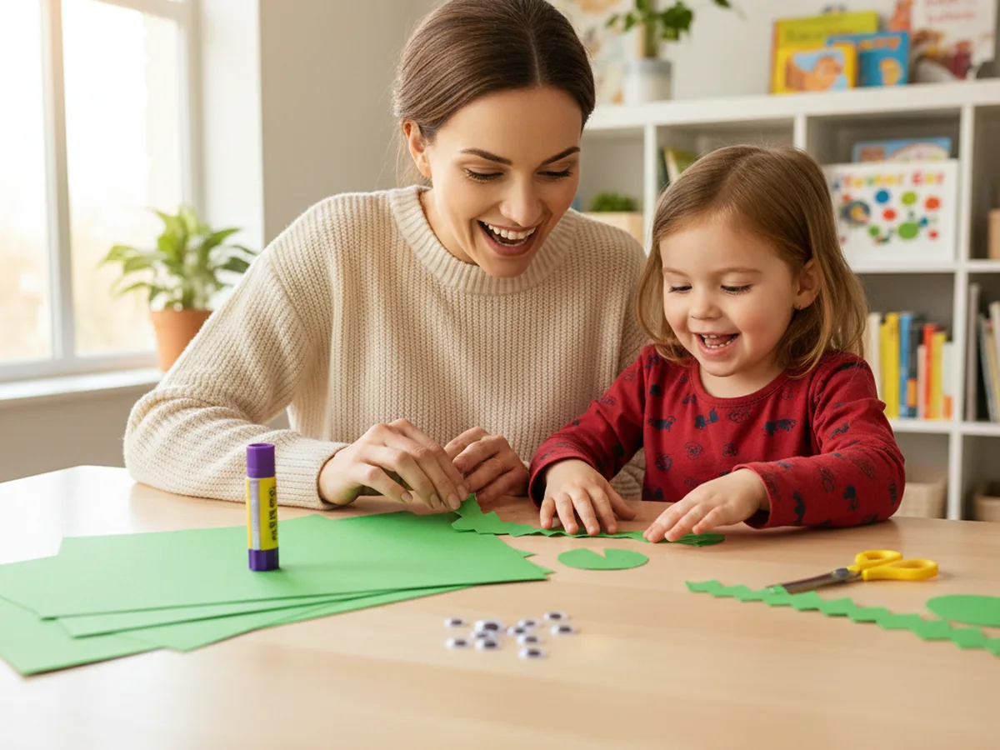
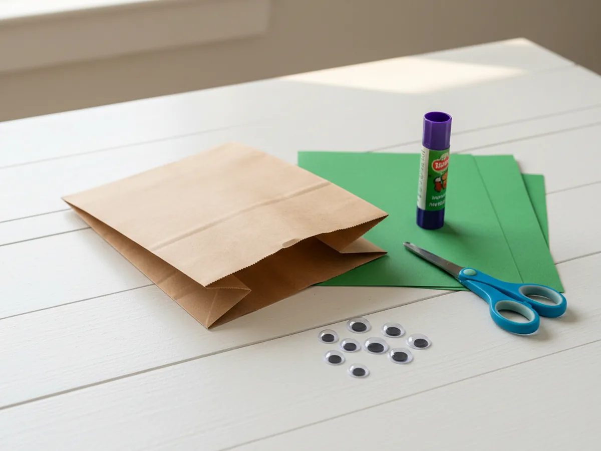
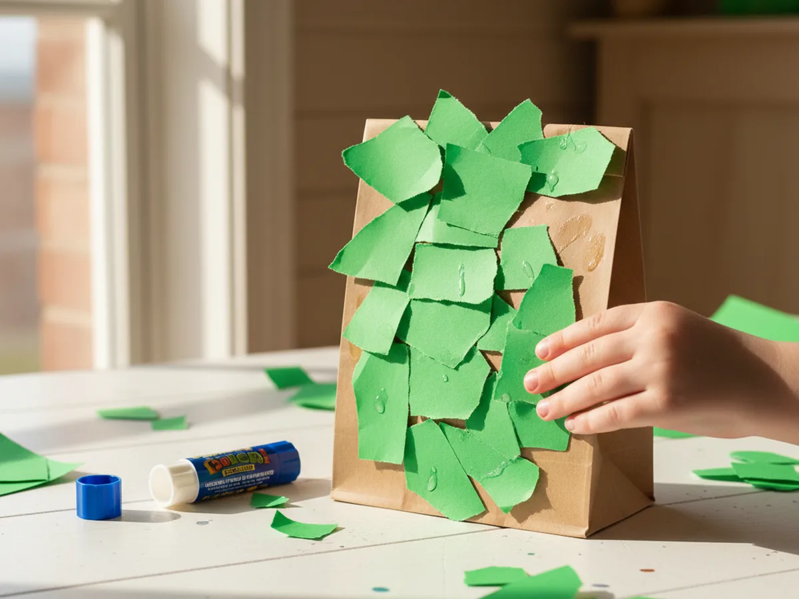
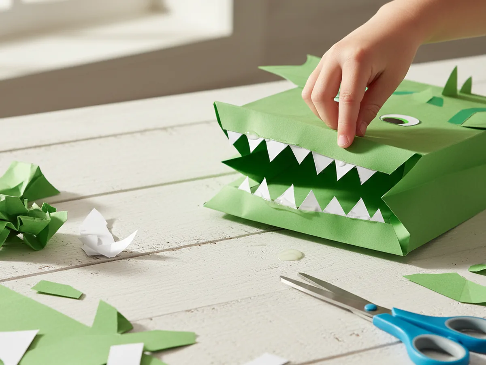
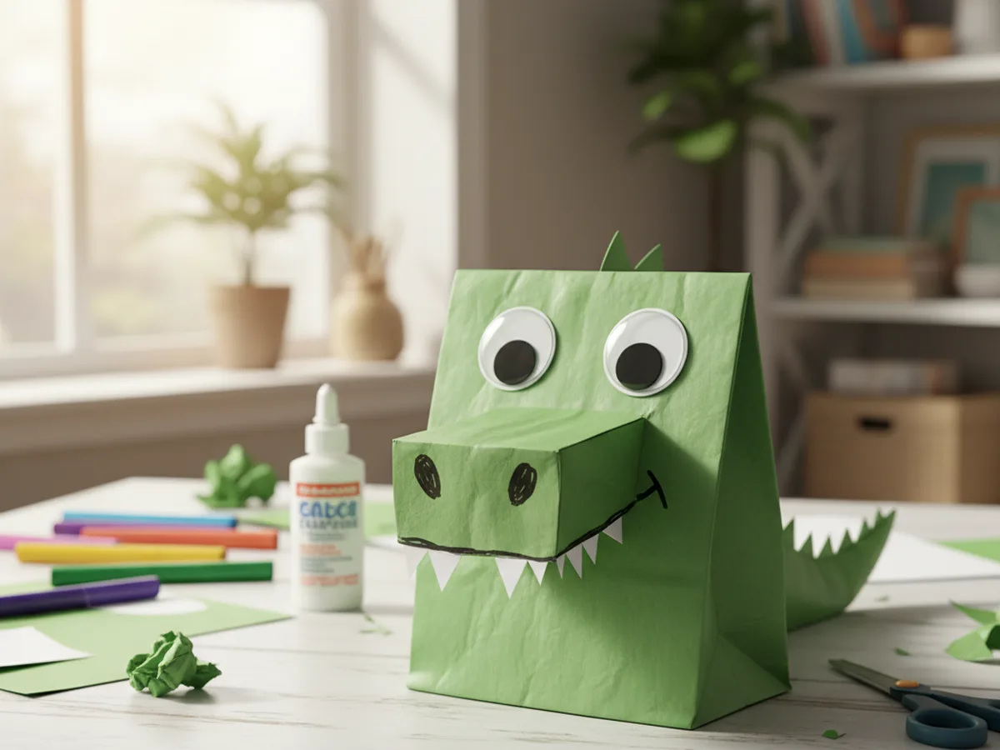
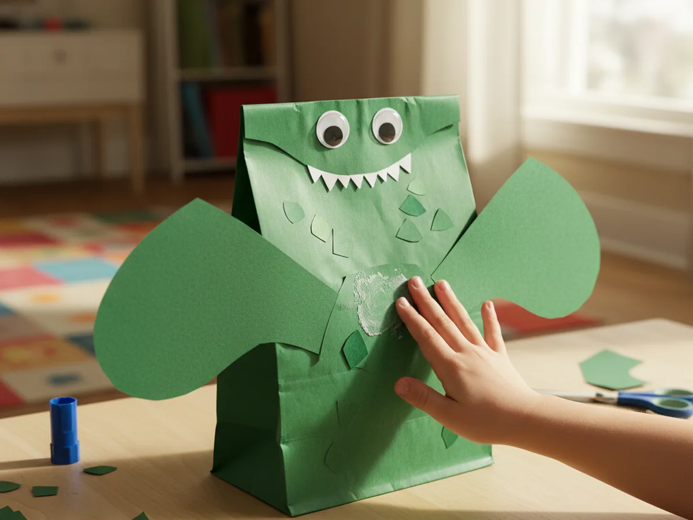
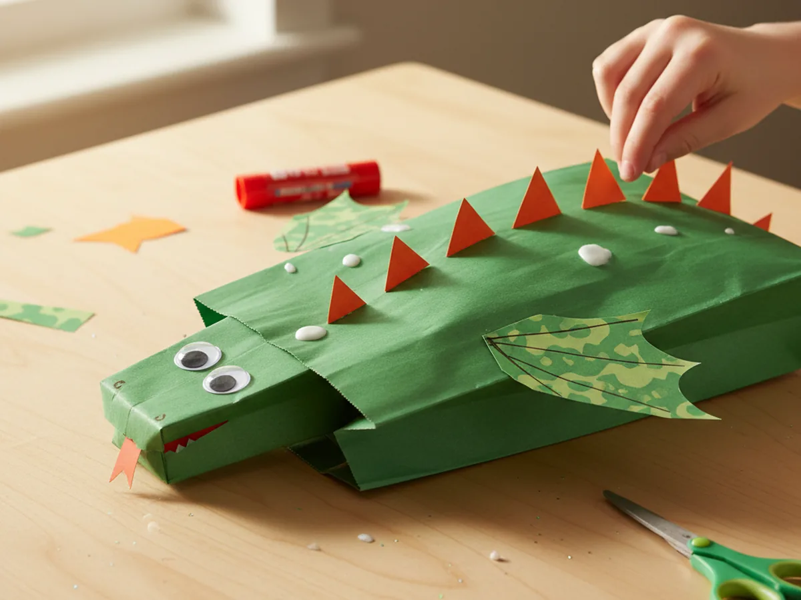
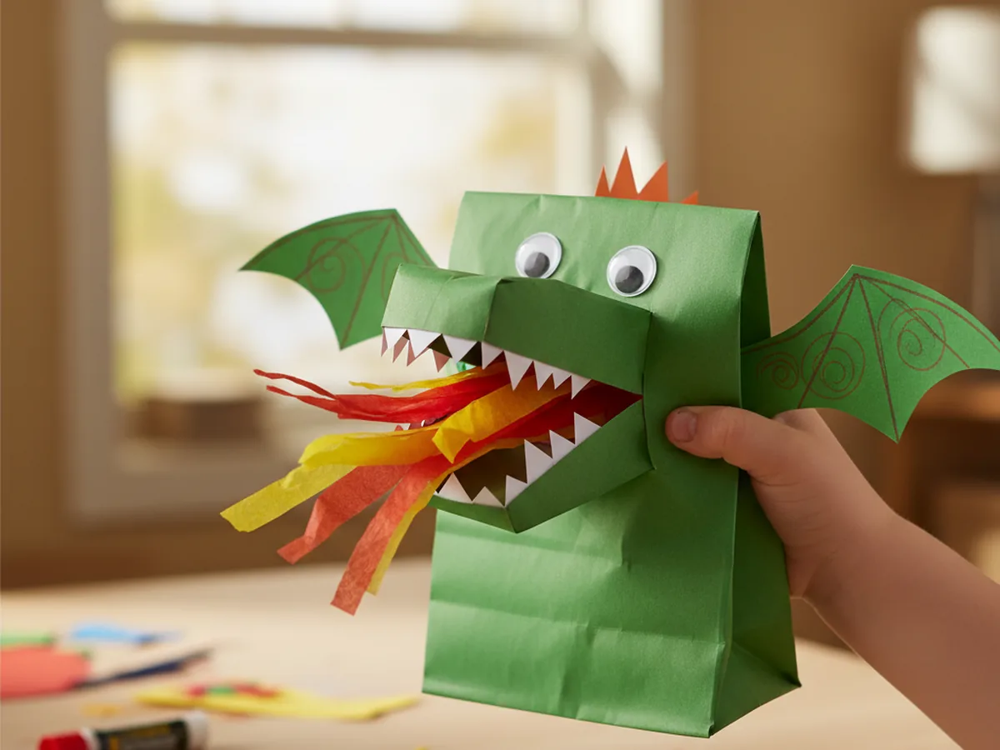

There is something wonderful about a craft that turns into a toy your child actually wants to play with, and this paper dragon puppet craft is exactly that. With a simple brown paper lunch bag, some construction paper, and a handful of easy supplies, you can make an expressive, fire-breathing dragon puppet your child will want to wave around all afternoon. 🐉 The whole project takes about 30 minutes, uses no paint, and creates very little mess. It is a perfect rainy-day activity, a school break project, or just a sweet craft session to enjoy together at the kitchen table.
The best part is how quickly the puppet starts to feel like a real character. Once the googly eyes go on and the teeth appear inside the mouth, kids feel that special rush of creative pride that only happens when something they made truly comes alive.
Why Kids Love This Craft
Kids are endlessly captivated by dragons, and there is a special kind of magic in turning a plain paper bag into a roaring, fire-breathing creature with a personality all its own. From the moment the teeth appear and the googly eyes are pressed into place, children feel a rush of creative delight that makes this paper dragon puppet craft genuinely memorable.
What makes this craft especially exciting is that it is immediately play-ready. Unlike a decoration that gets hung on the wall, a puppet invites the child to use it right away. The moment the dragon is finished, little ones will slip their hand inside and start acting out dragon adventures before you have even tidied up the craft table. That combination of making something and then playing with it is incredibly satisfying for young children.
There is also real developmental value woven into every step. Cutting wings and spines, gluing pieces in place, and layering different colors all build fine motor skills and hand coordination. Choosing colors and deciding what kind of dragon to make gives children genuine creative ownership over the finished result. And because every step of this paper dragon puppet stays beginner-friendly and achievable, there is nothing here to cause frustration, even for younger crafters. ✂️

What You'll Need
Here is everything you need to make this paper dragon puppet craft at home. Lay it all out before you start so the session flows without any interruptions.
- Brown paper lunch bags, one per puppet, check your kitchen drawer since most households already have these.
- Crayola Construction Paper (480 sheets, assorted colors), for the dragon's body cover, wings, spines, teeth, and flames. Green, red, orange, yellow, and white are all used.
- FEPITO Self-Adhesive Googly Eyes (1600 pieces, assorted sizes), two per dragon, just peel and press for an instantly expressive face.
- Crayola Washable Glue Sticks (12-pack), easy for little hands to manage and fully washable.
- Fiskars Training Scissors for Kids 3+, spring-action and child-safe, great for cutting paper shapes.
- Crayola Broad Line Washable Markers (12-pack), for drawing nostrils, scales, and any finishing details.
Step-by-Step Instructions
These steps are easy to follow, even if it is your very first puppet craft. Work through each one together and let your child take the lead wherever they feel confident.
Step 1: Set Up the Paper Bag
Lay a brown paper lunch bag flat on the craft table with the folded bottom flap facing upward. This flap is the key to the whole puppet. It forms the dragon's upper jaw and mouth. Slip your hand gently inside the bag and fold your fingers up into the flap to feel how the mouth will open and close. Your fingers move the top jaw up, and your thumb and lower fingers hold the bottom of the bag. Make sure the bag is not too stiff or crumpled. A standard-sized lunch bag works perfectly for young children's hands. Once you can feel the puppet motion clearly, you are ready to start building your dragon.

Step 2: Cover the Bag in Green
Cut several pieces of green construction paper to fit across the front, back, and sides of the paper bag, and glue them on with your glue stick. Cover the flap with green paper too so the entire puppet looks like a vivid green dragon from every angle. You do not need perfectly precise edges. Slightly overlapping pieces and roughly cut shapes give the craft a warm, handmade look that young children find deeply satisfying. If your child would prefer a blue dragon, a purple dragon, or even a multi-colored dragon, this is the perfect step to hand them the decision. There is no wrong color for a paper dragon puppet.

Step 3: Make the Dragon's Teeth
Cut a strip of white construction paper about two inches wide and long enough to span the full width of the bag flap. Then cut a zigzag pattern along one long edge to create a row of pointed dragon teeth. The teeth do not need to be perfectly even. Jagged, irregular points look wonderfully fierce and add to the charm. Fold the flat straight edge of the strip slightly and apply glue along it, then press it firmly along the inside front edge of the bag flap so the teeth peek out whenever the mouth is opened. This step always gets a big reaction from kids. The moment those teeth appear, the paper bag becomes unmistakably a dragon.

Step 4: Add the Eyes and Face
Peel the backing off two self-adhesive googly eyes and press one onto each side of the upper face area on the bag, positioned toward the center and roughly level with each other. Larger googly eyes look especially dramatic and expressive on a dragon face. Once the eyes are in place, pick up the black marker and draw two small oval or teardrop-shaped nostrils just below the center eye line. You can also draw a furrowed brow above the eyes to give your dragon a fierce look, or curve the brows upward for a friendly, playful expression. Let your child decide what kind of personality their dragon should have. 😄

Step 5: Cut and Attach the Wings
Cut two large wing shapes from green construction paper or a contrasting color like deep blue, yellow, or red. Each wing should look like a wide rounded triangle with slightly pointed tips, roughly as tall as the bag is wide so the wings look bold and dramatic when attached. You can also add a small notch or two along the outer edge of each wing to give them a more detailed, bat-like silhouette. Apply a generous stripe of glue along the flat inner edge of each wing and press one firmly to each side of the bag body, positioning them about halfway up the puppet. Hold each wing in place for several seconds until the glue catches properly.

Step 6: Add the Dorsal Spines
Cut a row of small to medium triangles from orange, red, or yellow construction paper to create the dragon's signature spiny back. Aim for 5 to 8 spines depending on the size you make them. Glue the flat base of each triangle along the top edge of the bag, starting just behind the head area and working downward toward the bottom of the puppet. Arrange them in a slightly staggered line so they look natural and organic rather than perfectly uniform. The spines give the paper dragon puppet craft a bold, recognizable silhouette that children find very exciting. At this stage, the dragon really starts to look impressive.

Step 7: Add the Flames and Finish
For the final and most exciting touch, cut a flame shape from red and yellow construction paper. The easiest approach is to cut a tall teardrop or tongue shape from red paper, then cut a slightly smaller one from yellow paper and layer the yellow on top of the red for a fiery, two-tone effect. Apply a small dot of glue to the flat base of the layered flame and tuck it up inside the mouth pocket so it sits just inside the opening. When you open the puppet mouth, the flames shoot out dramatically. Children absolutely love this moment. Use your marker to add any final details you like: scale lines along the body, claw shapes along the bottom edge, or extra color anywhere the dragon needs it. Your paper dragon puppet craft is complete.

Variations to Try
Rainbow Dragon Version: Instead of covering the bag in a single color, use strips of red, orange, yellow, green, and blue construction paper layered across the body for a multi-colored effect. Let your child choose the order of the colors. This version looks especially vibrant and works beautifully as a display piece even after playtime is over.
Mini Dragon for Toddlers: For children under age 4, skip the scissors entirely and pre-cut all the shapes yourself before sitting down together. Set out the pieces and let your little one do all the gluing and pressing. This keeps the activity fully accessible while still giving your youngest a real sense of creative ownership over their dragon.
Dragon Family Craft: Make one dragon puppet for each family member with different colors and personalities. A fire-breathing red dragon, a calm blue sea dragon, and a spiky purple dragon each get a name and a character. Giving each dragon a personality turns the craft session into a storytelling activity that can go on long after the glue has dried. 🎭
Final Thoughts
This paper dragon puppet craft is one of those projects that stays with kids long after the craft table is cleared. The finished puppet is not just something to look at. It is something to hold, play with, and bring to life, and that extra dimension makes it feel truly special. From the first fold of the paper bag to the final flames tucked inside the mouth, every step is manageable, low-mess, and genuinely fun to do side by side with your child. Whether they roar with their dragon or put on a full puppet show for the family, I hope it gives you both a sweet and memorable shared moment.
More Crafts You'll Love
If your little one loved making this paper dragon puppet, these other animal paper crafts are just as simple and just as fun: